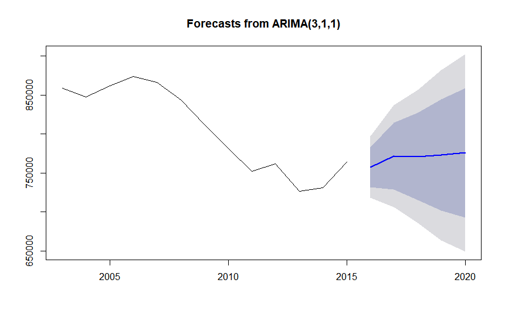

Data Analysis (Time Series Analysis)
A Time Series is an ordered series of data points over a certain period of time.
Data analysis when done over a period of time to analyze a variable is accomplished using Time Series Analysis.
It is widely used technique commonly used in the fields of finance, economics and retail. Weather forecasting and
earthquake prediction also employ time series analysis to predict the relevant variables. The main use of Time Series
Analysis is making short term predictions or forecasts in a time series.
We will use the United States national crime data from the same UNODC dataset to make some predictions
for crimes in the U.S and some other coutnries.
Assault
Figure 1: Time Series of Assault crimes in the United States from 2003 to 2015.
The ACF and PACF functions can be used to find values p and q for the ARIMA(p,d,q) model.
he acf() and pacf() functions are used to find the value of p and q for the Assault time series. We can also use the auto.arima() function which gives the best fit values for p and q automatically.
The value of p is found to be 3 and the value of q is found to be 0. Thus, the ARIMA(3,1,1) model is used for TSA.

Figure 2: Assault forecast using ARIMA (3,1,1) model
Theft
Figure 3: Time Series of Theft crimes in the United States from 2003 to 2015.
The same process is used on this dataset to find the correct ARIMA model.
Using ACF and PACF, we find that the best model for the theft time series is the ARIMA(2,0,1) model.
Figure 4: Theft forecast using ARIMA (2,0,1) model
Kidnapping
Figure 3: Time Series of Kidnapping crimes in the England from 2003 to 2015.
The same process is used on this dataset to find the correct ARIMA model.
Using ACF and PACF, we find that the best model for the Kidnapping time series is the ARIMA(1,1,1) model.
Figure 3: Kidnapping crime forecast using ARIMA (1,1,1) model
Other Analysis and Visualizations
We have also used a bar chart to show the comparison between the Assaulta and Homicide crime rates of countries. This visualization
is for the 2010 which had the most data available. Click here to see the full page version of this chart.
Figure 4: Interactive bar chart showing the rates of Assault and Homicide (stacked) in 2010.
This pie chart shows the percentage of worlds crime by country.
Figure 5: Interactive pie chart showing the total instances of Homicides in the world in 2010. Percentage represents the percentage of total homicides in the world.